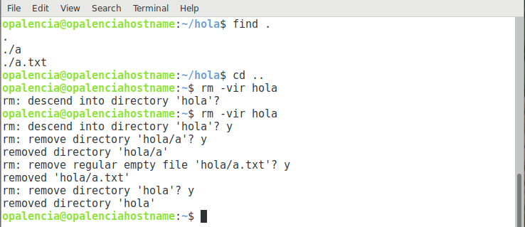

Eliminar carpetas y archivos > rm¶
Nombre del comando: rm
Man page online: https://linux.die.net/man/1/rm
Descripción: Elimina archivos o carpetas.
Man page local: $ man rm o $ man rm > rm.txt
Instalado por defecto: Sí, al menos en Debian.
Algunas Opciones:
-d, --dir Elimina carpetas vacías.
-i Preguntar antes de eliminar.
-v, --verbose Explique qué se está haciendo.
-r, -R, --recursive Eliminar directorios y sus contenidos recursivamente.
Ejemplo 1: $ rm -vd hola, elimina la carpeta hola, siempre y cuando exista y esté vacía.
Ejemplo 2: $ rm -vir hola, elimina la carpeta hola y todo su contenido, pero antes pregunta si se quiere realizar la acción.
Ejemplo 3: $ rm -vir ./-hola, a veces hay carpetas y archivos que inician con algún caracter especial, para dichos casos ésta es la forma de eliminarlos.